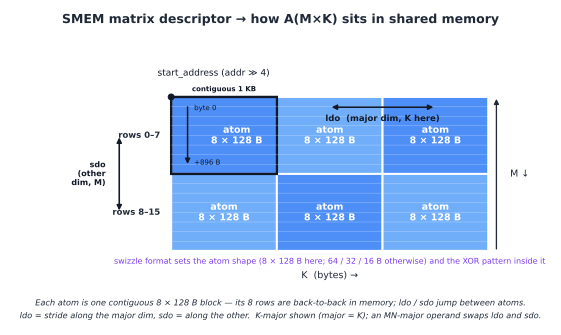

Tensor Core 各代 GPU 操作数 layout#
概述
在 Ampere、Hopper 和 Blackwell 中，Tensor Core 仍然执行相同的高级操作：
D = A B + C。从一代到下一代的变化是操作数如何到达 Tensor Core、支持哪些 tile shape 和数据类型以及累加器所在的位置。
Ampere 使用 warp 级寄存器片段。共享内存块通过
ldmatrix加载到片段中，累加器保留在寄存器中。Hopper 让
wgmma通过矩阵描述符直接从共享内存读取操作数。该描述符命名 Tensor Core 期望的共享内存 swizzle 格式。Blackwell 保留共享内存操作数路径，但将累加器移至 TMEM。块缩放 MMA 还通过 TMEM 分级其缩放因子。
所有世代中仍然存在两个内存限制：全局内存合并和共享 bank 冲突。
从远处看，Tensor Core 运行稳定。它将 A 和 B 的 tile 相乘，加上累加器 C，并生成 D。该形式自 Volta 以来一直相同。
有关该行动的细节尚未确定。在一代上速度很快的 kernel 在下一代上可能会很慢。使用错误 layout 的 kernel 也可能计算出错误的答案，即使逻辑数学仍然显示 D = A B + C。原因是 Tensor Core 不消耗抽象矩阵。它消耗非常特定的硬件 layouts 中的操作数。
本章遵循跨三代的 layout 合约。 Ampere 通过 warp 级寄存器片段公开 Tensor Core。 Hopper 将输入操作数移动到共享内存描述符。 Blackwell 保留共享内存操作数，但将累加器移至 TMEM。运算仍然是矩阵乘法累加，但进出 Tensor Core 的路径每次都会改变。
Data Layout 章节中的 layout 表示法是我们用来描述这些合约的语言。 Blackwell TMEM 详细信息在 特殊存储器：TMEM 中单独介绍。
两个从未消失的限制#
在涉及 Tensor Core 之前，两个普通内存约束已经形成了 GPU kernel 的 layout。
第一个是全局内存合并。当 warp 的 32 个 lane 发出全局内存负载时，内存系统希望地址落入少量连续、对齐的内存段中。如果地址分散，则 warp 负载将变成多个内存事务。相同的逻辑数据移动需要更多的带宽和更多的时间。
第二个是共享 bank 冲突。共享内存分为 32 个库。如果 warp 中的 lane 访问映射到同一 bank 的不同地址，则无法同时为这些访问提供全部服务。硬件将它们序列化。 layout 作为平面共享内存阵列看起来无害，但由于其 bank 模式，速度可能会很慢。
Swizzling 是修复共享内存方面的常用方法。逻辑块保持不变，但物理地址映射被排列，以便访问模式分布在各个 bank 上，而不是堆叠到一个 bank 上。
这两个约束甚至适用于从不使用 Tensor Cores 的 kernels。 Tensor Core kernels 添加第三个约束：操作数必须排列在 Tensor Core 指令本身所期望的 layout 中。本章的其余部分将介绍第三个约束在 Ampere、Hopper 和 Blackwell 中如何变化。
Ampere：注册经线 lane 上的片段#
在 Ampere 级 GPUs 上，主要的 Tensor Core 指令是 warp 级 mma.sync.aligned.m16n8k* 系列。重要的事实是指令读取和写入数据的位置：寄存器。
A、B 以及 C 或 D 累加器都是分布在 warp 的 32 个 lane 上的每个 thread 寄存器片段。共享内存只是暂存区。在 MMA 运行之前，必须将操作数块从共享内存移至指令所需的确切寄存器片段 layout 中。
数据路径如下所示：
SMEM to registers with ldmatrix
registers to registers with mma.sync
registers back to SMEM with ordinary stores
Ampere layout 的大部分故事都遵循这条路径。 kernel 必须以可有效加载的形式将块存储在共享内存中，然后使用 ldmatrix 生成 mma.sync 所需的寄存器片段。
交互式：Ampere SM data path，展示 cp.async/LD/ST staging、ldmatrix、mma.sync 以及 accumulator 留在 Register File 中。
Ampere Tensor Core 的期望是什么#
Ampere Tensor Core 读取由 8 x 8 子 tile 单元构建的寄存器片段。这些是 ldmatrix 加载和 MMA 消耗的单位。
以 mma.m16n8k16 与 fp16 或 bf16 输入和 fp32 累积为例。蓄能器 tile 的形状为 16 by 8。它以固定的模式分布在 32 条 lane 上。
对于 C 或 D 累加器，lane l 保存行：
l / 4
l / 4 + 8
和列：
2 * (l % 4)
2 * (l % 4) + 1
因此，每个 lane 拥有四个 fp32 累加器值：来自两个 8 行半部的两行，与两个相邻列交叉。四个连续的 lane 覆盖一排的八列。
A 操作数使用相同的 M 侧行雕刻。 K 维度分布在 l % 4 和 lane 所持有的寄存器中。对于 fp16 或 bf16，每个 32 位寄存器包含两个 K 值。
B 操作数使用匹配的 K layout，并将 N 侧分布在 lane 组和寄存器上。
确切的细节因指令形状和数据类型而异，但原理是固定的。 Tensor Core 需要特定的每 lane 寄存器片段。如果这些值不在该模式的寄存器中，则指令将乘以错误的元素。
在 layout 表示法中，m8n8 片段是用命名 lane 轴编写的模式，例如：
S[(8, 4, 2) : (4@laneid, 1@laneid, 1@m)]
两个 laneid 迭代器一起描述行和列片段如何跨 lane 分散，而最终的 m 组件描述每 lane 寄存器槽。
ldmatrix：Shared Memory 注册片段#
ldmatrix 是桥接共享内存和 Tensor Core 寄存器片段的 Ampere 指令。它是 warp-集体负载。一条指令将一个或多个 8 x 8 16 位矩阵从共享内存移动到 mma.sync 所期望的分布式寄存器 layout 中。
指令形式为：
ldmatrix.sync.aligned.m8n8.x1.shared.b16
ldmatrix.sync.aligned.m8n8.x2.shared.b16
ldmatrix.sync.aligned.m8n8.x4.shared.b16
带有可选的 .trans 限定符。
.x1、.x2 和 .x4 形成加载一个、两个或四个 8 x 8 矩阵。行基地址由 lane 提供。对于矩阵 m 和行 r，基地址来自 lane m * 8 + r。这意味着 .x1 使用 lane 0 到 7 作为行地址，.x2 使用 lane 0 到 15，.x4 使用 lane 0 到 31。
结果直接落在 MMA 片段中。对于基本的 8 x 8 情况，lane l 接收 Tensor Core 期望的行和列对。每 lane ld.shared 指令的普通循环必须手动重现该分散。 ldmatrix 作为一条 warp 集体指令执行共享内存到片段的重新排列。
.trans 形式在加载时转置每个 8 x 8 矩阵。当操作数以与 MMA 指令期望的相反方向存储时使用。

写回 Ampere 片段#
mma.sync完成后，累加器仍然是一个寄存器片段。 epilogue 必须将该片段移出。
在 Ampere 上，没有ldmatrix的专用反向。 kernel 使用普通的 per-thread 存储，有时在存储之前进行 warp 混洗或本地重新排列，将累加器写入有用的 layout 中的共享内存或全局内存。
这使 Ampere 模型保持简单，但也将大量 layout 工作暴露给 kernel。输入端使用ldmatrix来创建片段。计算指令读取和写入寄存器片段。输出端由这些片段的普通存储处理。
调配 Ampere#
Ampere kernels 已经需要共享内存 swizzles。原因是共享内存块通常以一种访问模式写入并以另一种访问模式读取。
假设一个 tile 是从全局内存中沿着行填充的。行主 layout 使写入合并并且银行友好。但 ldmatrix 稍后可能会以有效沿着列或跨 8 x 8 子 tile 的模式读取 tile。使用普通的行主 layout，这些读取可以堆叠到同一共享内存组上。
对于简单的 (8, 64) float16 tile，一行是：
64 * 2 bytes = 128 bytes
这正是一个完整的共享 bank 行。沿着固定列走下去，每行前进 128 个字节，因此 bank 索引会重复。八行可以折叠到同一行上，从而产生八向冲突。
更改为普通列主 layout 并不能解决整个问题。它通常将冲突转移到其他访问。行写入变得更差，而列式读取变得更好。
XOR swizzle 通过使物理列依赖于行来修复此问题。一个简单的版本是：
physical_col = logical_col xor row
逻辑 tile 没有改变。共享内存中的物理 layout 经过排列，以便行式写入和 Tensor Core 读取模式都可以避免 bank 冲突。
在 Ampere 上，这个 swizzle 通常是通过手写共享内存索引数学来表示的。后来的几代使其成为硬件引擎使用的描述符格式的一部分。

Hopper Tensor Core 的期望是什么#
Hopper 共享内存矩阵描述符是共享内存中矩阵 tile 的紧凑描述。它告诉 wgmma 如何将逻辑操作数坐标转换为共享内存地址。
描述符包括以下字段：
start address
leading dimension offset
stride dimension offset
swizzle mode
base offset
确切的解释取决于操作数的主要模式。对于 K-major tile，一步沿着 K 前进，另一步沿着 M 前进。对于 MN-major tile，角色交换。
swizzle 模式是共享内存描述符格式之一，例如：
SWIZZLE_NONE
SWIZZLE_32B
SWIZZLE_64B
SWIZZLE_128B
swizzle 模式决定两件事。它确定描述符使用的原子形状，并确定该原子内部应用的异或排列。例如，128 字节 swizzle 模式将操作数视为 8 行 x 128 字节原子的 grid，并在每个原子内部应用 swizzle。
kernel 仍然必须正确放置字节。 TMA 通常填充共享内存块，并且 TMA 描述符必须使用与 wgmma 描述符后来命名的相同的 swizzle 格式。如果 TMA 写入 128 字节调配 tile，则 wgmma 描述符必须将其读取为 128 字节调配 tile。如果描述符和数据不一致，Tensor Core 将读取加扰的操作数。
这是 Ampere 的主要转变。 swizzle 不再仅仅隐藏在手写共享内存索引中。 Hopper 使其成为一流的描述符格式。写入 tile 的 TMA load 和读取 tile 的 wgmma 指令都可以命名相同的格式。

Hopper 输出仍使用寄存器#
Hopper 更改输入路径，但累加器仍然位于寄存器中。
wgmma 指令将累加器写入每个 thread 寄存器片段中。确切的片段大小和寄存器计数取决于指令形状，例如 m64nNk16，其中 N 更改累加器寄存器的数量。但基本思想与 Ampere 相同：epilogue 消耗寄存器片段。
所以 Hopper 有一个混合的 layout 模型。输入操作数可以直接来自共享内存描述符，由硬件描述为 swizzle。输出累加器仍然是寄存器 layout 的问题。
Blackwell 改变输出侧。
Blackwell：tcgen05 和 TMEM#
Blackwell 保留数据操作数的共享内存描述符思想。 A 和 B 仍然在 Tensor Core 期望的 layout 中的共享内存中准备就绪。某些模式还可以从 TMEM 读取 A 操作数。
主要的变化是累加器。 tcgen05.mma 将其累加器写入 Tensor Memory 或 TMEM，而不是将其保留为长寿命寄存器片段。在计算阶段，累加器保持在 TMEM 中。 epilogue 稍后使用 tcgen05.ld 将其加载回寄存器。
这会将输出 layout 问题从寄存器移至 TMEM。 kernel 必须分配 TMEM，选择正确的 TMEM layout，等待 MMA 完成，然后使用匹配的 tcgen05.ld 路径恢复 epilogue 的累加器片段。
cta_group::1 和 cta_group::2 如何将累加器拆分到一个或两个 CTAs 的详细信息在 Tensor Cores: tcgen05 中介绍。 layout 与前几代产品最不同的是 block-scaled 比例因子 layout。
TMEM 中的比例因子 layout#
块缩放 MMA 模式（例如 mxfp8 和 nvfp4）添加比例因子操作数。除了 A 和 B 之外，MMA 还写着：
SFA(M, SFK)
SFB(N, SFK)
其中 SFK 是 K 刻度块的数量。
数据操作数 A 和 B 位于共享内存中。比例因子位于 TMEM 中。这给了他们不同的运动路径。
TMA 从全局内存加载到共享内存。它不会直接加载到 TMEM 中。因此比例因子通常分两步移动：
global memory to shared memory with TMA
shared memory to TMEM with tcgen05.cp
只有在该副本之后，tcgen05.mma 期望读取它们的内存空间中的比例因子才会出现。
TMEM 比例因子 layout 使用 TMEM 硬件坐标 Lane 和 Col。在 TIRx layout 表示法中，这些轴写为 TLane 和 TCol。
128 行缩放向量被压缩为 32 lane 组，然后在 TMEM 的四个 32 lane 窗口中复制。在 layout 表示法中，核心模式是：
S[(32, sf_per_mma) : (1@TLane, 1@TCol)] + R[4 : 32@TLane]
分片放置基本 32 行组：
TLane = r
TCol = s
副本项在 lane 偏移量 0、32、64 和 96 处添加副本：
TLane = r + 32 * q, where q in {0, 1, 2, 3}
TCol = s
这是 warpx4 广播模式。在整个 128 lane TMEM 空间中都可以看到相同的紧凑比例因子组。
32 位 TCol 单元内还有字节封装。包装取决于scale_vec模式：
1X: one scale value is broadcast across the 32-bit cell
2X: two scale values are packed, each duplicated
4X: four K-block scale values are packed

此封装没有直接的 Ampere 或 Hopper 类似物，因为这些代没有 tcgen05 block-scaled MMA 的 TMEM 比例因子操作数。
在 cta_group::2 中，比例因子遵循它们缩放的数据。 SFA 缩放 A，因此它在两个 CTAs 上按 M 分割，匹配每个 CTA 拥有的 A 行。 SFB 缩放 B，由计算的两个 CTA 部分共享，因此 SFB 被多播到两个 CTAs (Tensor Cores: tcgen05)。
重复出现的片段#
尽管周围的内存路径发生了变化，但一种结构不断返回：m8n8 样式的寄存器片段。
在 Ampere 上，ldmatrix 构建该片段，以便 mma.sync 可以读取它。
在 Hopper 上，wgmma 将其累加器写入为 epilogue 的寄存器片段。
在 Blackwell 上，累加器在计算期间位于 TMEM 中，但 tcgen05.ld 在 epilogue 处理并存储它之前将其加载回寄存器片段中 (特殊存储器：TMEM)。
所以碎片不会消失。它的角色发生了变化。早期版本在整个计算阶段都将累加器保留在那里。 Blackwell 主要用在 TMEM 和 epilogue 之间的边界处。
直通线#
在 Ampere 上，kernel 显式构建 Tensor Core 寄存器片段。通过索引数学，共享内存 swizzle 主要是 kernel 的责任。
在 Hopper 上，Tensor Core 可以通过矩阵描述符直接从共享内存中读取操作数。 Swizzle 成为 TMA 和 wgmma 共享的命名描述符格式。
在 Blackwell 上，输入端仍然使用共享内存操作数，但累加器移至 TMEM。块缩放 MMA 还添加了必须分级到 TMEM 中的缩放因子操作数。
该描述符不会删除 layout 工作。他们使合同变得明确。 kernel 仍然必须确保数据移动路径、存储器 layout 和 Tensor Core 指令全部一致。写入混合 SMEM tile 的 TMA 描述符、读取该 tile 的 MMA 描述符以及附加到缓冲区的 layout 必须全部描述相同的物理排列。
如果这些部分中的任何一个不同意，硬件仍然会运行。它只会读取错误的字节或读取缓慢。这就是为什么 layout 不是 Tensor Core kernel 周围的装饰。它是指令界面的一部分。